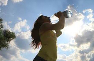

Benefits of a Healthy Lifestyle
When you start making changes that are good for your body, your body will feel these great changes and others will notice them too. When you eat well, sleep the recommended hours, and do regular exercise, you will help your body and mind be in tip-top shape. Here is a list of benefits that you or others might see when you start making the right choices that will lead to a healthy lifestyle
- Drinking lots of water will hydrate your skin and you might notice clearer skin.
- People will notice the positive attitude that you are carrying when you eat healthier and sleep more.
- More energy also comes from a combination of healthy choices like getting your regular sleep and eating more fruits and vegetables.
- Making healthy life choices will help you keep your weight in shape naturally...no need for dieting!

Resources:
livestrong.com